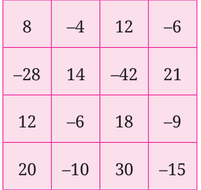
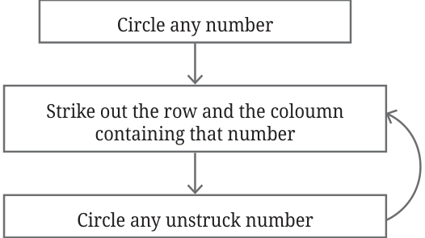
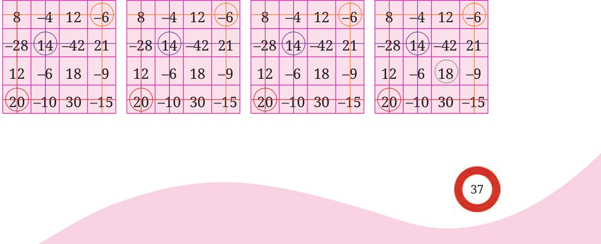
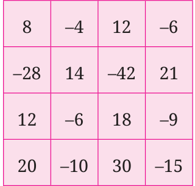

A grid containing some numbers is given below. Follow the steps as shown until no number is left.


When there are no more unstruck numbers, stop. Multiply the circled numbers. An example is shown below.
Round 1 Round 2 Round 3 Round 4

Try again , and choose different numbers this time. What product did you get? Was it different from the first time? Try a few more times with different numbers! Play the same game with the grid below. What answer do you get?

What is so special about these grids? Is the magic in the numbers or the way they are arranged or both? Can you make more such grids?
Division of Integers
We have earlier seen how division can be converted into multiplication. For example, ( \(- 100) \div 25\) can be reframed as, ‘what should be multiplied to 25 to get ( - 100)?’. That is,
\(25 \times\) ? = ( \(- 100)\).
We know that
\(25 \times\) ( \(- 4) =\) ( \(- 100)\).
Therefore,
( \(- 100) \div 25 =\) ( \(- 4)\).
Similarly, ( \(- 100) \div\) ( \(- 4)\) can be reframed as, ‘What should be multiplied to ( \(- 4)\) to get ( - 100)?’
( \(- 4) \times\) ? = ( \(- 100)\).
We know that
( \(- 4) \times 25 =\) ( \(- 100)\).
Therefore,
( \(- 100) \div\) ( \(- 4) = 25\).
Similarly, we know that
( \(- 25) \times\) ( \(- 2) = 50\).
Therefore,
\(50 \div\) ( \(- 25) =\) ( \(- 2)\).
Can you summarise the rules for integer division looking at the above pattern?
In general, for any two positive integers a and b, where \(b \ne 0\), we can say that
\(a \div (-b) = -(a \div b)\),
\(-a \div b = -(a \div b)\), and
\(-a \div (-b) = a \div b\).